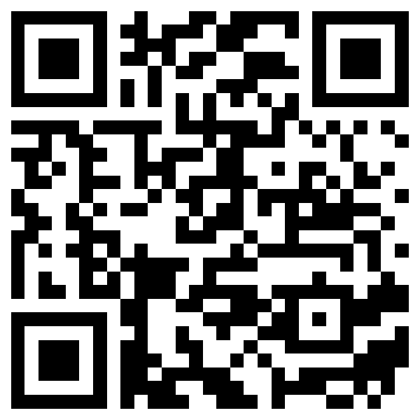

Lernpass prüfen
Für die Lehrkraft. Schülerinnen und Schüler zeigen im Lernzirkel unter „Lernpass“ einen 16-stelligen Prüfcode. Hier eingeben, dann sehen Sie die Werte und ob der Code echt ist.
Schülerversion
fhe86.github.io/magnetismus-zirkel
Link für Sharezone oder Tafel. Der QR-Code daneben führt zur selben Seite.

| Geprüft in dieser Sitzung |
|---|
Was die Werte bedeuten
- Aufgaben gelöst: richtig beim ersten Versuch (Auswahl) bzw. spätestens im zweiten (Rechnen, Sortieren, Reihenfolge). Jede Aufgabe zählt pro Tag nur einmal. In Klammern: davon auf Stufe 2 oder 3 (Probenniveau und Knobeln).
- Kann-Punkte: 20 Punkte aus dem Lernzettel. Abgehakt nur durch eine richtig gelöste Testaufgabe.
- Abzeichen: drei Aufgaben in Folge auf Stufe 2 oder 3 sofort richtig, je Station eins (10 möglich).
- Aktive Lernzeit: nur, wenn die Seite sichtbar war und in der letzten Minute getippt wurde. Lerntage: Tage mit mindestens 5 aktiven Minuten.
- Datum: Tag, an dem der Code erzeugt wurde. Ein alter Code zeigt einen alten Stand.
Orientierung für die mündliche Note
Ein Vorschlag, keine feste Regel. Die gelösten Aufgaben und Kann-Punkte sagen mehr als die Zeit.
| Sehr gründlich vorbereitet | mindestens 18 Kann-Punkte, 120 gelöste Aufgaben (davon die Hälfte Stufe 2/3), 6 Abzeichen, an mehreren Tagen gelernt |
|---|---|
| Gut vorbereitet | mindestens 14 Kann-Punkte, 70 gelöste Aufgaben, 3 Abzeichen |
| Ernsthaft angefangen | mindestens 8 Kann-Punkte, 30 gelöste Aufgaben |
Grenzen
- Der Fortschritt liegt nur im Browser des Schülergeräts. Gerätewechsel oder gelöschte Websitedaten setzen ihn zurück. Dann zählt der letzte notierte Code.
- Die Prüfsumme verhindert Abtippen mit erfundenen Zahlen. Wer den Quelltext auseinandernimmt, könnte sie nachbauen. Für eine mündliche Note reicht das, für eine Probe nicht.
- Wer zu zweit an einem Gerät arbeitet, teilt sich den Stand.